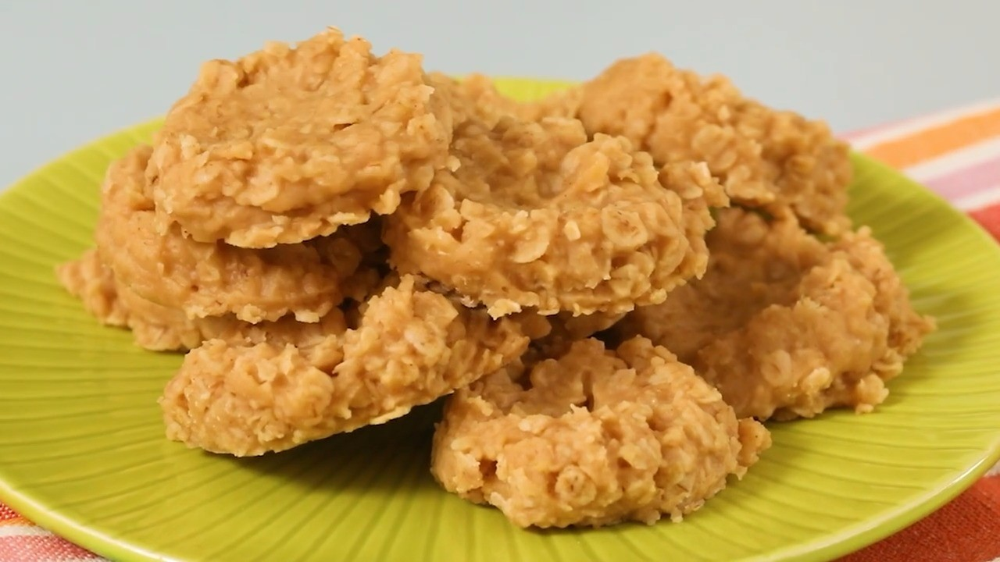

No Bake Peanut Butter Cookies

Quick and delicious Peanut-Buttery Treats!
If I had to pick a favorite cookie from my childhood, it would be these no bake peanut butter cookies.
These cookies, also known as preacher cookies, are a simple, straightforward way to make a treat for the whole family.
This recipe is easy to throw together for times when you need a quick and simple dessert.
Ingredients
- 1/2 Cup Unsalted buttet
- 1 and 3/4 Cups Granulated Sugar
- 1/2 Cup Milk
- 3/4 Cup Creamy Peanut Butter
- 1 Teaspoon Pure Vanilla Extract
- 3 1/4 Cups Quick-Cooking
Directions
- Before getting started, make sure to gather all of your ingredients and measure everything out. Line a couple of large baking sheets with parchment paper (I like to just line my countertop with a large sheet of parchment paper, if your countertop is heat resistant you can also do this instead) and set aside.
- Place the butter, sugar, and milk in a saucepan and heat over medium heat, making sure to stir often until the butter is melted and everything is well combined. Bring the mixture to a rolling boil (the top should be completely covered in bubbles and bubbling vigorously) and allow to boil for 60 seconds (make sure to set a timer!) without stirring.
- Remove from the heat, and stir in the peanut butter and vanilla extract until fully combined. Stir in the oats and mix until all of the oats are coated with the mixture and everything is well combined.
- Drop spoonfuls of the mixture onto the prepared baking sheets. I like to use a 1.5 tablespoon cookie scoop and flatten the cookies out a little. Allow to cool for about 45 minutes- 1 hour or until the cookies have firmed up, serve, and enjoy! The cookies will continue to firm up more the longer they cool.